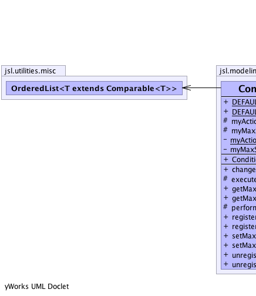
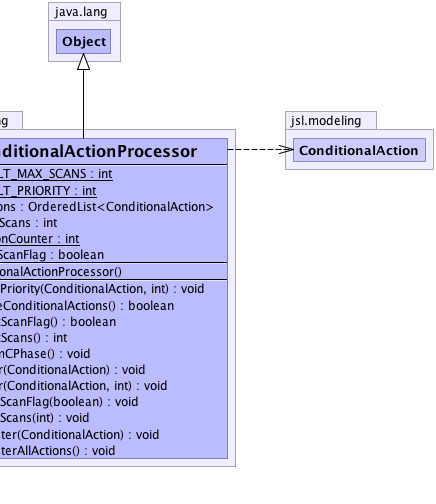

jsl.modeling.ConditionalActionProcessor
jsl.modeling.ConditionalActionProcessor
|
||||||||||
| PREV CLASS NEXT CLASS | FRAMES NO FRAMES | |||||||||
| SUMMARY: NESTED | FIELD | CONSTR | METHOD | DETAIL: FIELD | CONSTR | METHOD | |||||||||
java.lang.Object
public class ConditionalActionProcessor
Processes the ConditionalActions to check if their testCondition() is true, if so the action is executed. All actions are checked until no action's testCondition() is true To prevent conditional cycling the number of rescans is limited to DEFAULT_MAX_SCANS, which can be changed by the user or turned off via setMaxScanFlag()
|  |  |
| Field Summary | |
|---|---|
static int |
DEFAULT_MAX_SCANS
|
static int |
DEFAULT_PRIORITY
|
private static int |
myActionCounter
|
protected OrderedList<ConditionalAction> |
myActions
|
private boolean |
myMaxScanFlag
|
protected int |
myMaxScans
|
| Constructor Summary | |
|---|---|
ConditionalActionProcessor()
|
|
| Method Summary | |
|---|---|
void |
changePriority(ConditionalAction action,
int priority)
Changes the priority of a previously registered action |
protected boolean |
executeConditionalActions()
Returns true at least one ConditionalAction was executed false means all actions tested false |
boolean |
getMaxScanFlag()
Returns the maximum scan flag |
int |
getMaxScans()
Returns the maximum number of scans during the c phase |
protected void |
performCPhase()
|
void |
register(ConditionalAction action)
Registers the action with the default priority |
void |
register(ConditionalAction action,
int priority)
Registers the action with the given priority |
void |
setMaxScanFlag(boolean flag)
Sets the maximum scan checking flag. |
void |
setMaxScans(int max)
Sets the maximum number of scans |
void |
unregister(ConditionalAction action)
Unregisters the action from the simulation |
void |
unregisterAllActions()
Unregisters all actions that were previously registered. |
| Methods inherited from class java.lang.Object |
|---|
clone, equals, finalize, getClass, hashCode, notify, notifyAll, toString, wait, wait, wait |
| Field Detail |
|---|
private static int myActionCounter
public static final int DEFAULT_MAX_SCANS
public static final int DEFAULT_PRIORITY
protected int myMaxScans
private boolean myMaxScanFlag
protected OrderedList<ConditionalAction> myActions
| Constructor Detail |
|---|
public ConditionalActionProcessor()
| Method Detail |
|---|
public void register(ConditionalAction action)
action -
public void register(ConditionalAction action,
int priority)
action - priority -
public void changePriority(ConditionalAction action,
int priority)
action - priority - public void unregister(ConditionalAction action)
action - public final void unregisterAllActions()
protected boolean executeConditionalActions()
public final int getMaxScans()
public final void setMaxScans(int max)
max, - must be > 0protected void performCPhase()
public final boolean getMaxScanFlag()
public final void setMaxScanFlag(boolean flag)
flag -
|
||||||||||
| PREV CLASS NEXT CLASS | FRAMES NO FRAMES | |||||||||
| SUMMARY: NESTED | FIELD | CONSTR | METHOD | DETAIL: FIELD | CONSTR | METHOD | |||||||||